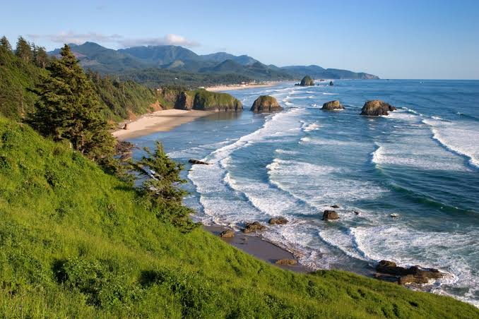

Oregon ist ein Bundesstaat der Vereinigten Staaten von Amerika. Er liegt im Nordwesten der Vereinigten Staaten in der Region Pazifischer Nordwesten
und wurde im Jahr 1859 als 33. Bundesstaat aufgenommen.
Flächenmäßig ist Oregon der neuntgrößte Bundesstaat, mit einer Bevölkerung von knapp über 4,2 Millionen (2020) liegt er unter den Bundesstaaten hingegen nur an 27. Stelle.
Ein Großteil der Bevölkerung konzentriert sich im Willamette Valley im Nordwesten des Staates. Dort liegen mit Portland, Eugene und der Hauptstadt Salem auch die drei größten
Städte Oregons.
Quellen- und Lizenzhinweis:
Dieser Text basiert auf dem Wikipedia-Artikel
Oregon
(geänderte Fassung) und steht unter der Lizenz
Creative Commons Attribution-ShareAlike 4.0 International (CC BY-SA 4.0).
Das Bild ist von
USA Tipps